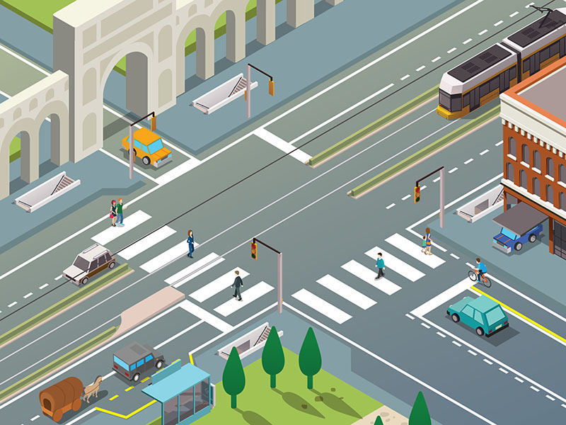

Attraversamenti pedonali

E' una parte della carreggiata (e quindi della strada) segnalata con strisce bianche parallele (strisce pedonali), in cui i veicoli devono dare la precedenza ai pedoni che attraversano.
Su di essa è vietata la fermata (e quindi anche la sosta) dei veicoli.
Su di essa è vietata la fermata (e quindi anche la sosta) dei veicoli.